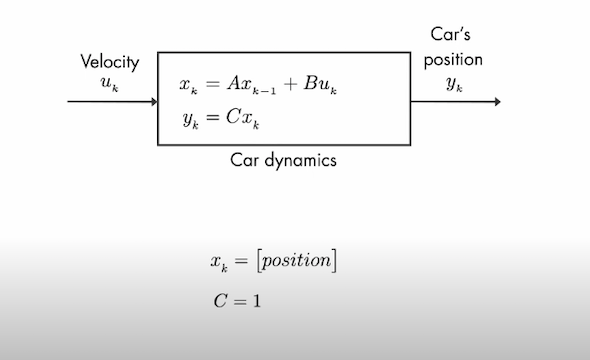
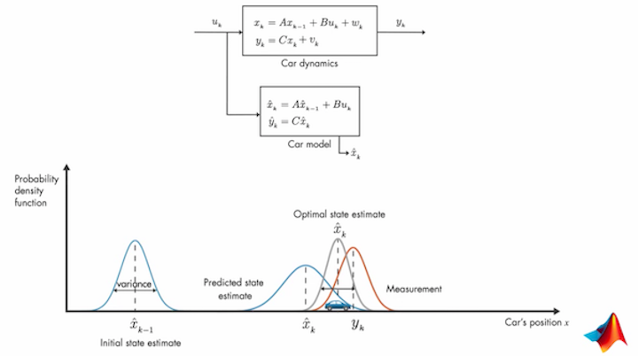

The Kalman Filter
The Kalman filter is an optimal estimation algorithm. Now this seems very underwhelming. To understand this, let’s dive straight into an example. Let’s say I have to measure the temperature of the fire inside a furnace. How do I measure it? It’s simple right? Just stick a sensor and read. Unfortunately, it's not that simple. The sensor or the material used in the sensor will most likely melt itself or get destroyed failing to measure the internal temperature. Now how do we solve this problem? We can measure the external temperature of the furnace. The question is how does measuring external temperature do us any good in this case? The answer is by using the external temperature , we can make an estimation of the internal temperature. The kalman filter is an algorithm which enables us to make optimal estimations of the state of any system.
To measure the position of our car, the data from IMU , odometer and the satellite are used. The data from all these sources are prone to drift and disturbances. To make them reliable and more accurate, Kalman filters can be used to estimate the car’s position based on the data from these three sources. Some common applications of Kalman Filter are guidance and navigation systems, computer vision and signal processing. One of the first uses of Kalman Filters was in the Apollo Project. It was used to predict the trajectory of the spacecraft.
Let’s look at an example of a car. Suppose we want to calculate the position of the car given we know the throttle at every instant. To further simplify let’s say the input to the system is the velocity and the output that we are interested in is the position of the car. This system will only have a single state which is the position.

The system will have noises in the sensors and even in the process as well. To account for this we need to consider the sensor and the process noise and let them be vk and wk respectively. We can use a mathematical model to calculate the state but the mathematical model won’t be able to consider the uncertainties during actual working of the system. This is where the kalman filter comes into play. By using a mathematical model, we can calculate the estimation of the position and by combining this estimation with the measured value, we can find the optimal estimate of the car’s position. This is better understood by using probability density functions or PDF. At any time stamp the estimated car position is given by a normal PDF and the car’s position is most likely to be in the mean position of the distribution. In the next time stamp the PDF is still normal but will have a greater variance because of the presence of the process noise (wk). Like the estimation the measurement can also be represented with a normal PDF and the variance in this PDF is variance due to sensor noise (vk). The best estimate can now be found by combining the PDFs for the estimated position and the measurement resulting in another PDF with a much lower variance. The mean of this resulting PDF will give us our optimal state estimate. This is the basic idea of Kalman Filter
